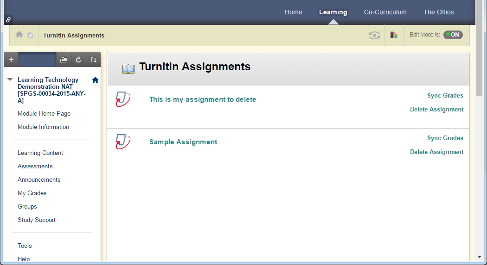
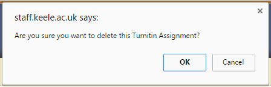

If you need to remove a Turnitin assignment from BlackBoard for any reason then you can follow the instructions below, please note that deleted assignments can only be retrieved by Turnitin and not by Keele's IT staff.
- Login to the KLE.
- Go to the Module that contains the Turnitin assignment you want to delete.
- In the left hand menu under Course Management click on Course Tools.
- Then click Turnitin Assignments.
- You will now see a list of Turnitin assignments that are available within the module.

- To the right of each assignment you will see a Delete Assignment link.
- If you click on Delete Assignment you will be asked to confirm if you want to delete or not.

- Click OK and the assignment will be permanently deleted.
All done! Your Turnitin assignment has been successfully removed.

This work is licensed under a Creative Commons Attribution-NonCommercial-ShareAlike 4.0 International License.